PSH Buildings:
All buildings at HIAL are going to be passive solar heated (PSH) – that uses only sunlight as the source of heat. Currently, we are experimenting with materials and different compositions of PSH techniques like an attached greenhouse, Trombe wall, and direct gain. We have successfully experimented with increasing the heat storage capacity in the Trombe Wall system with our Thermal Blocks. Or insulation values of bricks through our straw-clay bricks. Further research is currently underway using earthen construction techniques of rammed earth, straw-clay, and adobe wall systems to test the efficiency in PSH design. Local natural materials are tested, experimented with, and then used in construction such as clay from Basgo village, and soil from Taru village. The innovations in this technique have been phenomenal with buildings that stay at +15 °C inside the house even when it is -15 °C outside in winters. PSH buildings expedite the process of achieving Carbon Neutrality in Ladakh, as envisioned by the Prime Minister, as space heating and cooking consume almost 90% of all energy consumption in Ladakh in 2010.The images below present the PSH buildings constructed at HIAL as live labs to prototype and test the different construction techniques in real-time.
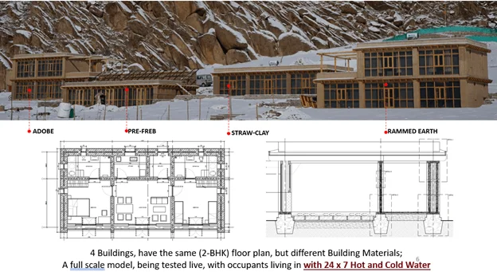
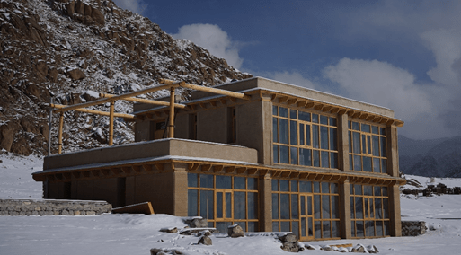
PSH @ HIAL
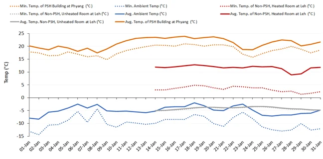
PSH Vs Non-PSH Graph Temperature Comprassion
The diagram above compares the indoor temperature of a PSH Building with a heated and non-heated room of a non-PSH Building. The PSH building at Phyang stays at around 20-25 °C daily average temperature using only solar energy, with minimums of up to 15 °C only. While the fossil-fuel heated room in a typical building in Leh averages at around 12 °C. The non-heated room in the same building stays between -5 °C to -3 °C. The outside temperature fell to as low as -15 °C minimum in the same time period.
Thermal blocks for Modified Trombe Walls in PSH Buildings:
The south-facing wall called the Modified Trombe Wall in these PSH buildings is made of a special type of brick called the “Thermal Blocks”. A thermal block is a unique brick constructed using water-filled plastic bottles embedded inside a plain-cement-concrete (PCC) block, invented at HIAL. The combination of concrete & water in the block enhances its overall thermal capacity while utilizing the benefit of the high thermal conductivity of concrete for efficient heat transfer in the Trombe Wall. The outer surface is black-painted to utilize black surface absorption. These modified Trombe Walls are one of the reasons for the enhanced performance of PSH buildings in Ladakh’s cold climate. The invention of new construction materials and designs is crucial to making the construction sector in Ladakh sustainable.
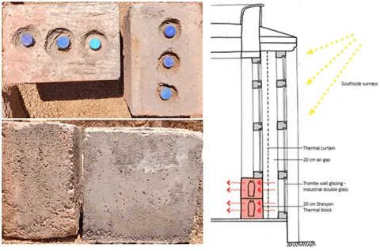
Strawclay bricks:
These are Fibre-reinforced earthen bricks, designed by HIAL. It has a low density and hence high insulation properties. The brick uses straw that is RESCUED from Punjab and hence saves pollution twice, once in Punjab from stubble burning and second in Ladakh by offsetting the need for space-heating. The brick is Easy to work with due to its low weight and reduces construction time in Ladakh’s short construction season owing to its large size. As the brick is highly insulative, it does not need cavity wall systems for insulation, hence does not need especially trained construction workers, unlike other construction techniques like cavity wall systems. The material is also cost-effective.
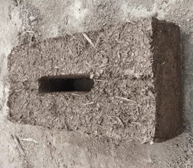
PreFREB Construction and Net Energy Positive Building:
An innovative construction technique, the Pre-Freb (prefabricated Fibre-reinforced block) wall system, enables ease and allows for timesaving in conventional construction systems. The blocks are pre-cast, have high insulation, and use straw rescued from Punjab. The straw helps in making the blocks low-density as well as provides compressive strength. The blocks can also be reinforced using TMT bars, cement, and sand. Pre-Freb when structurally enhanced with conventional or modern techniques like concrete, steel and timber, could be a solution for a modular multi-storey composite structure with natural materials. The blocks are Lego-like structures that can fit one above the other and be constructed in a matter of weeks. The structure is modular, consisting of two leaves that can accommodate different thicknesses of insulation depending on the location of the building. Thus, it is very beneficial in Ladakh, where the construction season is 6 months or fewer at places.The building uses a passive solar technique to meet its space heating needs. And hence, the solar panels installed on the top of the roof (a special type of solar panels system that acts as a waterproof roof system) generate enough power to electrify 3 other similar buildings at HIAL. Thus becoming a Net energy-positive Building.
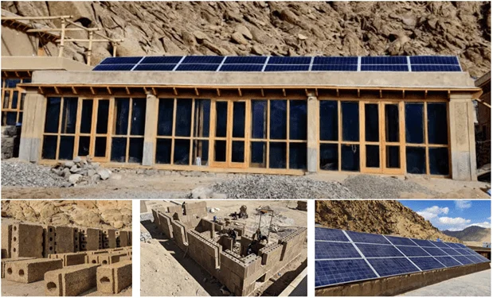
PSH Framed Building:
So far, PSH buildings have mainly been constructed using earth as the load-bearing structure, which does not fall into the building code requirements of the Indian government and hence the major energy-intensive government and defense buildings do not benefit from this type of construction technique. To address that issue, HIAL is constructing a passive solar heated concrete column-beam structure to demonstrate PSH buildings that also meet the building codes.HIAL suggested using insulative materials (like its straw-reinforced earthen bricks) to cover the entire framed structure, a technique we call ex-fill. The conductive concrete structure when sunken under these insulative materials prevents any thermal bridges, unlike in-fill techniques where the beams and pillar are exposed to the environment of Ladakh, creating heat sinks (thermal bridges). Thus helping in the retention of heat within the building element. To further increase the construction speed considerably, we are also exploring a confined construction technique.
These simple but innovative building techniques have the potential to revolutionize the construction sector of Ladakh.
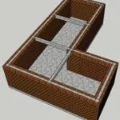
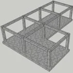
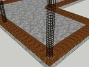
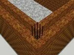
.webp) 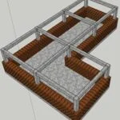
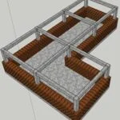
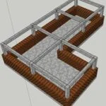
Large Scale PSH building:
To further demonstrate the possibility of the Passive solar heated technique, a large-scale PSH building in HIAL. The building would be multi-storey and have a footprint of around 22,000 sq ft. The building is currently under the preliminary construction stage and will employ the pillar-beam (framned structure) with an ex-fill construction technique. It will demonstrate the size and technique that can be used for building the headquarters of different governmental organizations in Ladakh. One of the first demonstrations for such a large-scale building.
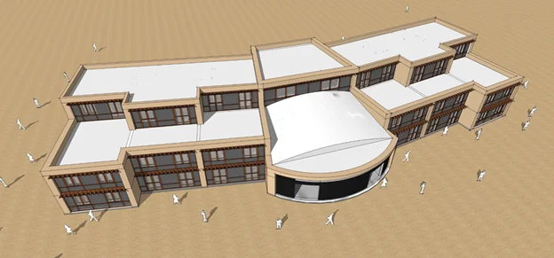
Strawclay-arch construction for woodless roof:
Ladakhi construction relies heavily on wood imported from Kashmir and other parts of India. The resource is very expensive and getting scarce with each passing year. Further, the impact on climate is also heavy. To address this issue, HIAL’s team has come up with the design construction of wood-less roof structures using low-weight, strawclay blocks for added insulative properties. The technique will help in reducing construction time, provide an alternative to the use of wood as the roof’s load-bearing structure, and provide insulation where it is needed most, reducing the construction cost considerably in the meantime. Being low weight, it also keeps the center of mass for the building low, hence providing earthquake resistant properties.
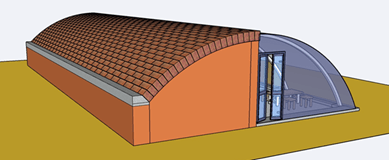
Solar tent:
There is a huge requirement for portable passive solar heated tents in Ladakh. The construction team of HIAL has addressed the issue by developing a passive solar-heated tent. Each component of the tent is portable and designed to weigh less than 30 kgs.
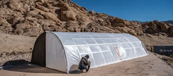